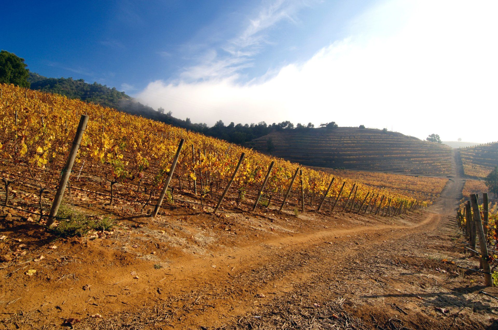
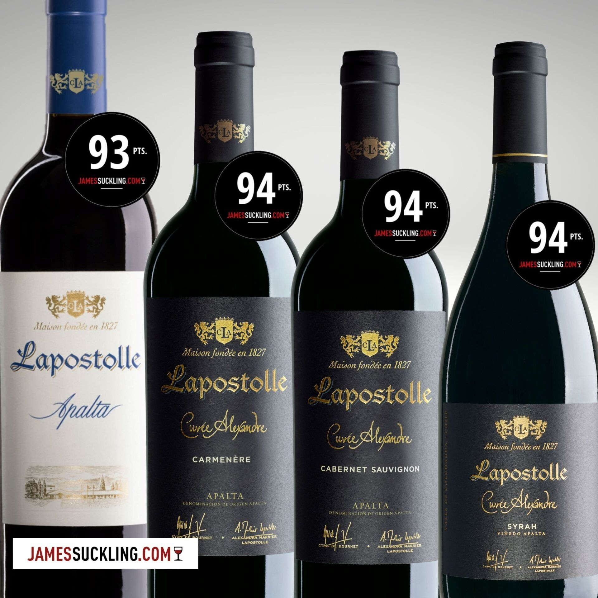
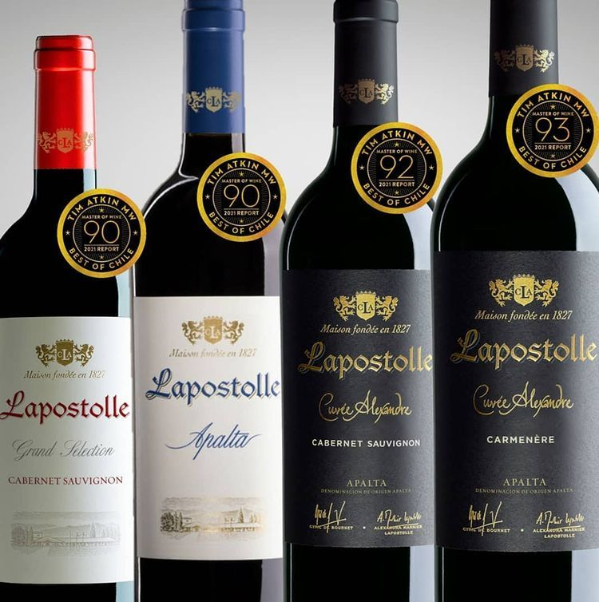
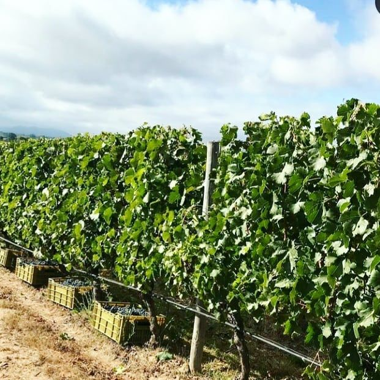
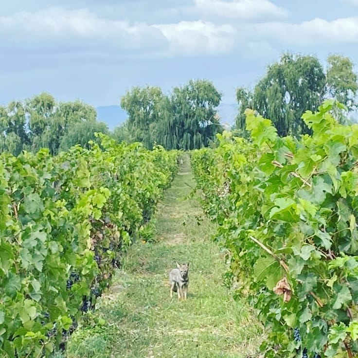

Clos Apalta 2021 has received a perfect 100 points from James Suckling, the fourth time the estate has achieved the score. Clos du Lican 2021 matched it with 100 points of its own.
La Parcelle 8 Vieilles Vignes, from century-old ungrafted vines, earned 99 points, and the Cuvée Alexandre range continues to earn praise from the critics.

James Suckling awards Clos Apalta 2021 a perfect 100 points, the fourth time the wine has received the top score.

100-year-old ungrafted "pied franc" Cabernet Sauvignon vines, bottled as a single parcel. Rated 99 points by James Suckling.

The horseshoe of coastal hills that regulates the sun across the Apalta Valley, granted its own DO in 2018.